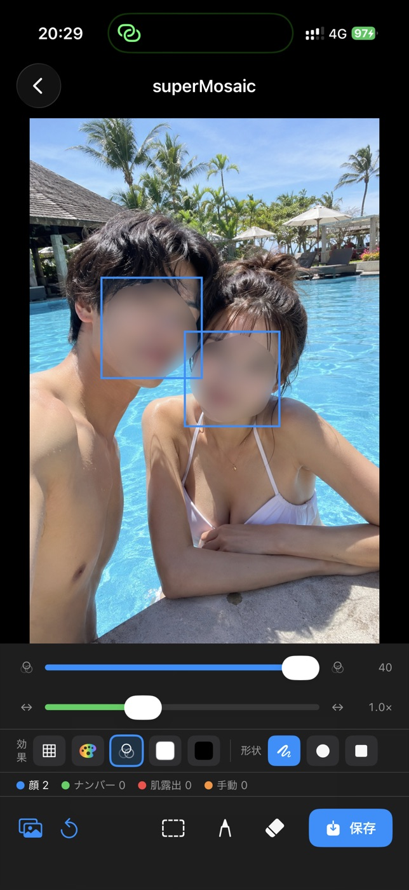
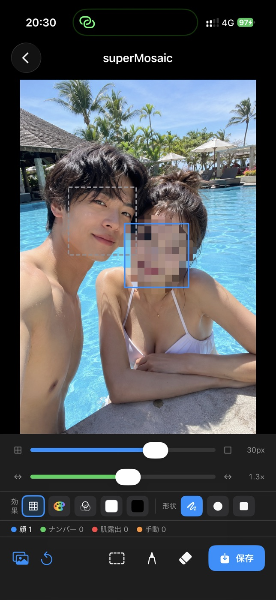
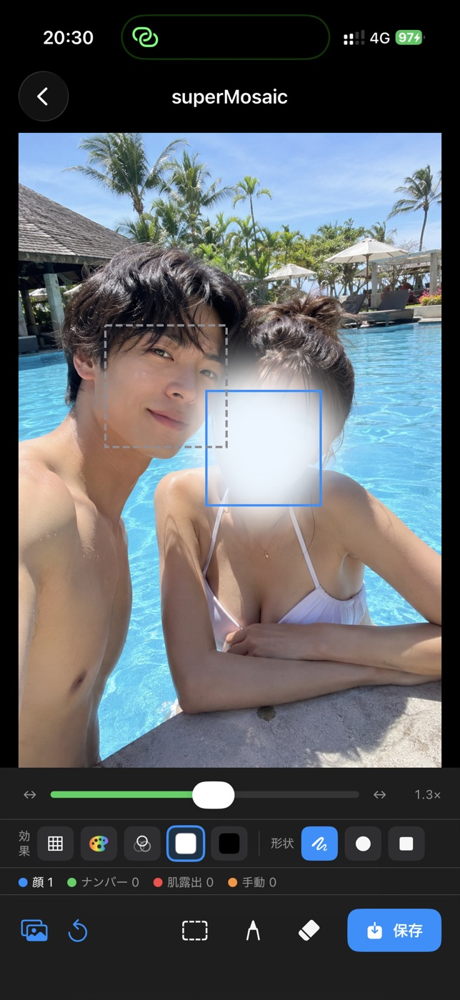
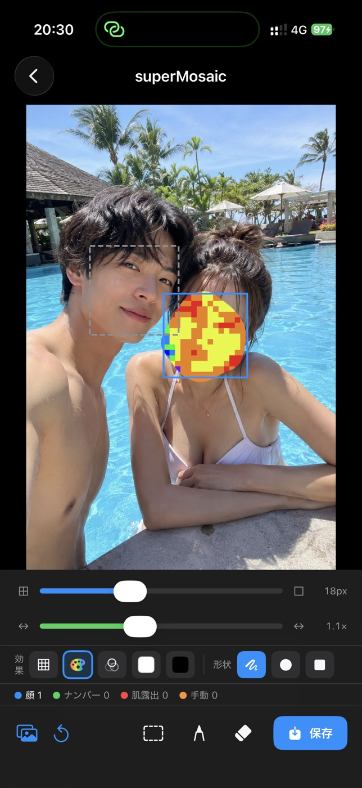
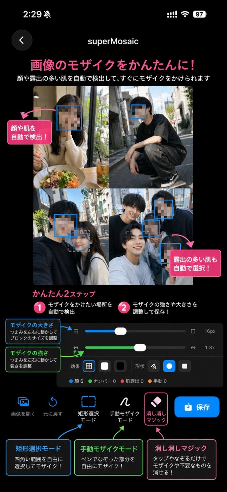
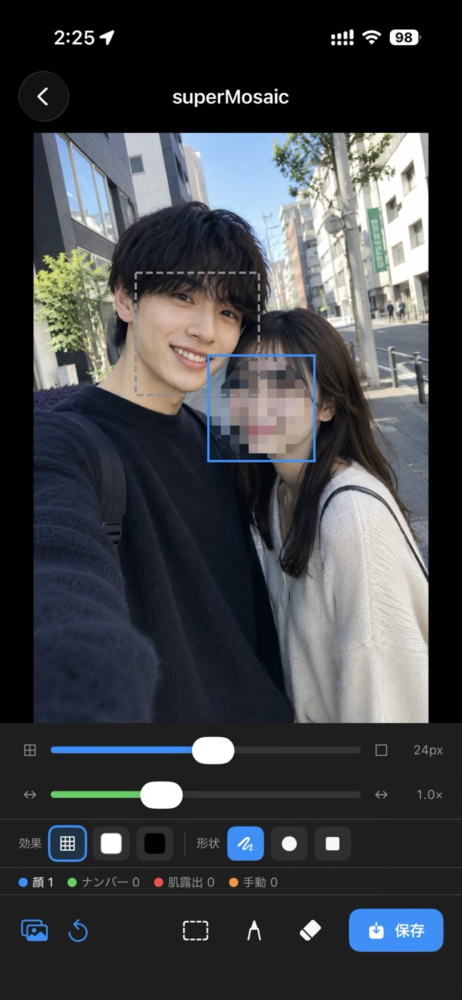
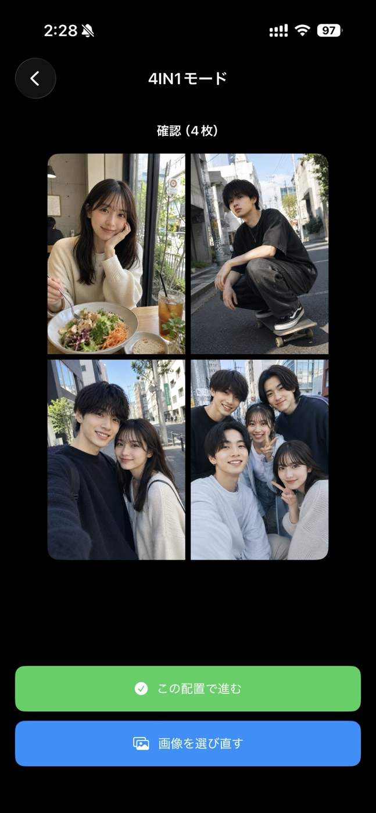
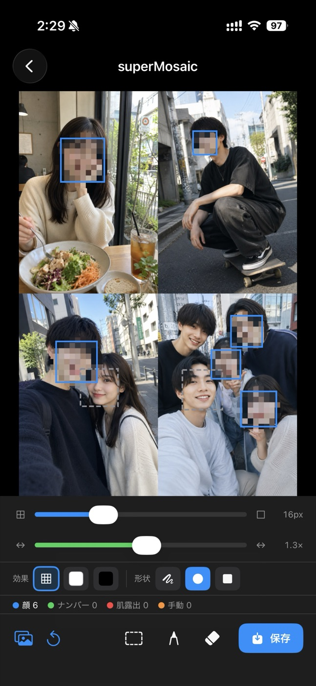

superMosaic auto-detects faces, skin and sensitive areas — then blurs, mosaics, whites-out or blacks-out in a single tap. Everything runs on your device. 顔・肌の露出・センシティブな領域を自動で検出し、ブラー／モザイク／白塗り／黒塗りをワンタップで。すべての処理は端末内で完結します。
Free to start · 100% on-device · No photos ever leave your phone 無料で始められます · すべて端末内で処理 · 写真が外部に送られることはありません

Blurブラー
Mosaicモザイク
White-out白塗り
ColorカラーOpen a photo and superMosaic instantly finds every face — plus exposed skin and especially sensitive areas — and covers them for you. No more pinch-and-zoom guesswork. 写真を開くだけで、すべての顔はもちろん、肌の露出や特にセンシティブな領域まで自動で検出してカバー。指で範囲を探す手間はもう要りません。

Pick the look that fits the moment. Switch effects instantly and dial in the exact intensity, block size and shape — round or square — until it's just right. シーンに合わせて効果を自由に選択。効果はその場で切り替えでき、強さ・ブロックの大きさ・形（丸／四角）まで思いどおりに調整できます。

Combine up to four photos into one clean collage and mask them all in the same pass. Perfect for sharing a set of moments in a single, privacy-safe image. 最大4枚を1枚のすっきりしたコラージュに合成し、そのまま一括でマスク。複数の思い出を、プライバシーに配慮した1枚にまとめて共有できます。


Everything you need to mask a whole camera roll without breaking a sweat.大量の写真も、ストレスなく一気に処理するための機能がそろっています。
Select many photos and apply the same masking to all of them in one go.複数枚をまとめて選び、同じ設定で一括処理。
For Instagram-style screenshots, remove the unwanted black bars at the top and bottom.インスタなどのスクショで生じる上下の不要な黒帯をきれいに除去。
Swipe a finger to wipe away a mask — or remove unwanted objects entirely.指でなぞるだけでモザイクや不要なものを消去。
Draw freely or drag a rectangle to mask exactly the area you want.ペンで自由に、または矩形でドラッグして好きな範囲を指定。
Detection and processing happen on your phone. Nothing is uploaded.検出も処理も端末内で完結。外部に送信されません。
Auto-detect, fine-tune, save. That's the whole flow.自動検出 → 調整 → 保存。これだけ。
Download superMosaic and mask faces and sensitive areas in seconds.superMosaic をダウンロードして、顔やセンシティブな領域を数秒でマスク。